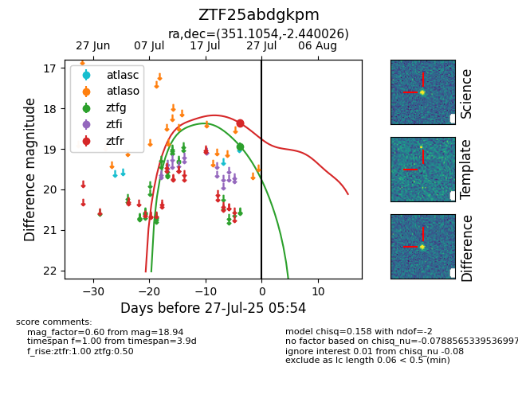

Target ZTF25abdgkpm at 2025-07-27 05:54, see:
FINK: fink-portal.org/ZTF25abdgkpm
Lasair: lasair-ztf.lsst.ac.uk/objects/ZTF25abdgkpm
ALeRCE: alerce.online/object/ZTF25abdgkpm
alt names
ZTF25abdgkpm (ztf,fink)
coordinates:
equatorial (ra, dec) = (351.1054,-2.44003)
galactic (l, b) = (79.0654,-57.70079)
photometry
last ztfg=18.94, ztfr=18.35
1 ztfg, 2 ztfr detections
